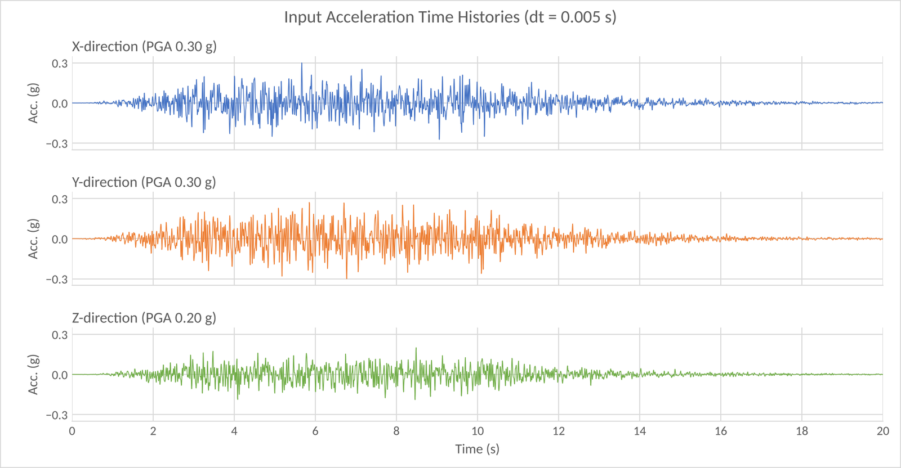
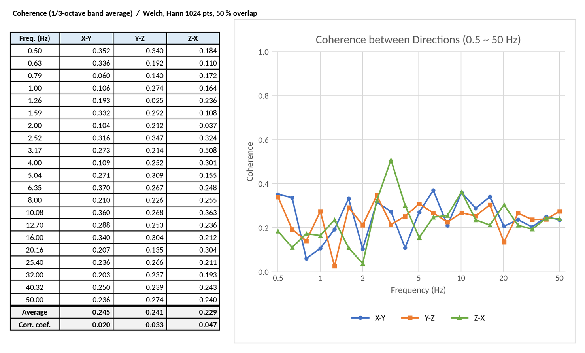

여기서
x[n] : 시간이력의 n번째 데이터
x
even
[n], x
odd
[n] : 짝수·홀수 번째 데이터
N : 데이터 수
E[k], O[k] : 짝수·홀수 데이터의 FFT
W
N
k
: Twiddle Factor, e−j2πk/N
X[k] : k번째 주파수 칸의 FFT 결과
fs : Sampling 주파수 [Hz]
j : 허수 단위
Coherence는 두 신호를 주파수별로 비교하는 값이기 때문에, 우선 시간이력을 주파수 영역으로 바꿔야 합니다.
FFT는 DFT의 연산량을 N log N 수준으로 줄인 방법으로, Bit Reversal 정렬과 Butterfly 연산을 반복해서 각 주파수 성분의 크기와 위상을 구합니다.
이 결과가 이후 PSD와 CSD 계산의 재료가 됩니다.
여기서
Power spectrum : FFT 결과 크기의 제곱
PSD : 파워 스펙트럼 밀도
N : 데이터 수
PSD는 한 신호의 에너지가 어느 주파수에 모여 있는지를 보여 줍니다.
FFT 결과의 크기를 제곱해서 Power Spectrum을 구하고, 데이터 길이로 나눠 단위 주파수당 값으로 정규화합니다.
Coherence 식의 분모에 두 신호의 PSD가 들어가기 때문에, 이 값이 있어야 상관성을 0~1 사이로 나타낼 수 있습니다.
여기서
FFT results1, FFT results2 : 두 신호의 FFT 결과
conj( ) : 켤레복소수
Cross spectrum : 한 FFT와 다른 FFT 켤레복소수의 곱
CSD : 교차 스펙트럼 밀도
N1, N2 : 두 신호의 데이터 길이
CSD는 두 신호가 같은 주파수에서 함께 움직이는 정도를 나타냅니다.
한 신호의 FFT에 다른 신호 FFT의 켤레복소수를 곱해서 구하기 때문에, 크기뿐 아니라 두 신호의 위상 차이도 담고 있습니다.
한마디로, Coherence 식의 분자가 되는 값이라는 뜻입니다.
여기서
C
x,y
(f) : 신호 x, y의 Coherence
G
xy
(f) : x, y의 교차 스펙트럼 밀도(CSD)
G
xx
(f), G
yy
(f) : x, y 각각의 PSD
f : 진동수 [Hz]
Coherence는 CSD 크기의 제곱을 두 PSD의 곱으로 나눈 값으로, 0이면 두 신호가 서로 무관하고 1이면 완전한 선형 관계라는 뜻입니다.
내진검증에서는 3방향 지진 입력이 서로 독립이어야 하므로, 이 값으로 입력 시간이력을 확인합니다.
여러 구간을 나눠 평균(Welch 방법)해야 잡음 때문에 값이 1에 가깝게 치우치는 것을 막을 수 있습니다.
이번 예제에서는 3방향 합성 지진 가속도(X, Y: PGA 0.30 g, Z: PGA 0.20 g, 20 s, dt = 0.005 s) 사이의 Coherence를 확인합니다.
Coherence는 Welch 방법(Hann 창, 1024점, 50 % Overlap)으로 계산하고, 0.5~50 Hz의 1/3 옥타브 대역별로 평균했습니다.
각 쌍의 평균 Coherence는 약 0.23~0.25이고, 상관계수는 0.05 미만입니다.
한마디로, 세 방향의 입력이 서로 상관성이 없다는 뜻입니다.


Coherence 페이지로 돌아가기